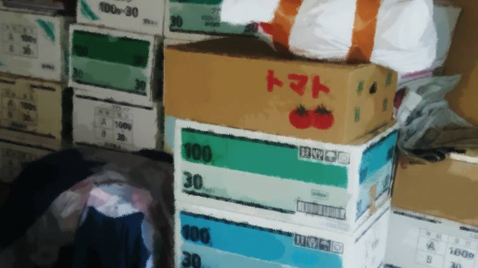

Script 00001807

"These clothes already stink of cigarettes. Maybe I'll quit this job..."
"From the police...?"
"Yes, this is Goto.
Yes, Momoko Goto.
Yes... yes...
Erina...!?
Yes... yes...
Understood! I'll be right there!"
"Hey, Momo-chan, your break's already over."
"Hey, Momo-chan, your break's already over."
"Manager, I'm sorry! Please let me leave early!"
"Huh!? Don't be stupid, we've got lots of customers right now. More importantly, there's something I want to talk to you about..."
"What is it...?"
"Huh!? Don't be stupid, we've got lots of customers right now. More importantly, there's something I want to talk to you about..."
"What is it...?"
"Momo-chan, do you have a boyfriend or anything?"
"Excuse me?"
"No, no, was that rude of me, so suddenly? I was thinking, if you'd like, how about dinner or something on our next day off?"
"Excuse me?"
"No, no, was that rude of me, so suddenly? I was thinking, if you'd like, how about dinner or something on our next day off?"
"Sorry, I have another part-time job that day..."
"Oh, I see... Is there any other day you're free?"
"I'm basically working almost every day... I don't have a day off all April."
"Oh, I see... Is there any other day you're free?"
"I'm basically working almost every day... I don't have a day off all April."
"Really? That's rough.
When do you hang out with your boyfriend?"
"It doesn't... matter, does it, that kind of thing..."
"No, see, Momo-chan, customers hassle you a lot, right? I thought it'd be good if I taught you how to deal with that kind of situation and so on."
"It doesn't... matter, does it, that kind of thing..."
"No, see, Momo-chan, customers hassle you a lot, right? I thought it'd be good if I taught you how to deal with that kind of situation and so on."
"What does that have to do with a boyfriend?
Like I said before, it's an emergency, so I'm leaving early."
"What, you're ignoring my invitation?"
"My sister has apparently been taken into protective custody by the police!"
"The police...? Ha ha, if she's the sister of someone like you, then she must've done something bad, right?"
"What, you're ignoring my invitation?"
"My sister has apparently been taken into protective custody by the police!"
"The police...? Ha ha, if she's the sister of someone like you, then she must've done something bad, right?"
"Huh!? Why would Erina do anything like that!"
"Your sister won't run away from the police, so clock in on time like you're supposed to."
"I'm going home."
"I'm telling you, don't go home! If you go home, you're fired! There aren't many places a delinquent girl like you can work, you know!?"
"Your sister won't run away from the police, so clock in on time like you're supposed to."
"I'm going home."
"I'm telling you, don't go home! If you go home, you're fired! There aren't many places a delinquent girl like you can work, you know!?"
"............"
"Well, someone like you quitting 3 days after starting is about what I expected. Do you know the cafe called Primavera? I'm a fan of their poster girl."
"............"
"Ha ha, not that you'd reach that level even in 100 years! Go on, you pair of dropout sisters, get taken care of by the police like the dropouts you are."
"Well, someone like you quitting 3 days after starting is about what I expected. Do you know the cafe called Primavera? I'm a fan of their poster girl."
"............"
"Ha ha, not that you'd reach that level even in 100 years! Go on, you pair of dropout sisters, get taken care of by the police like the dropouts you are."
"Why, you...!"
"Ugh...! What are you doing...!"
"I'm the one who wants nothing to do with working in a place like this!"
"Gwoh... that's a foul..."
"That one was for my sister. Badmouthing me is one thing, but why drag Erina into it too!"
"Owww...! I-I'll call the police...!"
"Ugh...! What are you doing...!"
"I'm the one who wants nothing to do with working in a place like this!"
"Gwoh... that's a foul..."
"That one was for my sister. Badmouthing me is one thing, but why drag Erina into it too!"
"Owww...! I-I'll call the police...!"
"Go right ahead.
From now on, you are strictly refused entry to Primavera!"
"Wh-what...?"
"It has been a long while, Michihata-sama. Thank you ever so much for visiting us again today. Will your order be the usual, an iced cafe au lait with extra milk?"
"That voice...!"
"Wh-what...?"
"It has been a long while, Michihata-sama. Thank you ever so much for visiting us again today. Will your order be the usual, an iced cafe au lait with extra milk?"
"That voice...!"
"The poster girl of Primavera...
Momoko Goto,
that's me!"
"Gwaaah..."
"Calling yourself a fan, and you can't even tell when I just change my expression and voice... Just be grateful that I even worked 3 days in a crummy shop like this for you! If you ever badmouth Erina again... I'll seriously kill you."
"Gwaaah..."
"Calling yourself a fan, and you can't even tell when I just change my expression and voice... Just be grateful that I even worked 3 days in a crummy shop like this for you! If you ever badmouth Erina again... I'll seriously kill you."
"Guh."